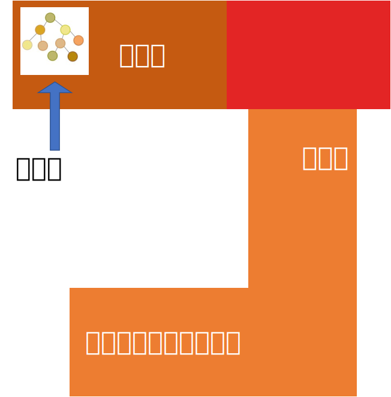

サイトとパ研のご案内¶
そもそもパ研ってどんな部活？¶
パ研は、「中高パーソナル・コンピューター研究部」の略です。 いつもは技術室の奥の方でプログラミングをしており、大会に向けて練習したり、作りたいものを作ったり、みんなで喋ったりしています。

パ研のすごいところは、10台以上の、それも高性能なパソコンをもっており、活動中に使えることです。 家にパソコンがないという方もひとまずは問題ありません。
ゆるくて楽しい部活なので、気軽に来てください。初心者も大歓迎です。 皆さんの入部をお待ちしています！
ここまで聞いてパ研に興味が出た方はContactをご覧ください。
このサイトのねらい¶
このサイトは、新入生の皆さんにパ研の活動内容を紹介するためのものです。 「パ研の活動内容？そんなのパソコンカタカタやるだけでしょｗ」とか思う人もいるかも知れませんが、実際のところ、パソコンのいじり方にも色々なものがあるのです。 パ研では、「班活動」というシステムを導入し、そういった様々な活動をいくつかの班に区切ってサポートしています。
今年のパ研には、以下の \(5\) つの班があります。このサイトではそれぞれの班の活動内容を、各班の班長が紹介します。興味の湧く班があればいいですね！
- 競プロ班
- CTF班
- 自作OS班
- Web開発班
- アプリ班
因みにですが、こういった班活動のいずれにも含まれないような活動をすることも可能です。 分野によっては、何人かは詳しい先輩もいるかもしれません。やってみたいことがある人は、適当な部員に声を掛けてみてください！
また、班活動を掛け持ちすることも可能なので、興味のある分野にはどんどん手を出していきましょう！
サイトの目次¶
それぞれの章の大まかな内容を説明します。
・Home¶
このページです。サイトとパ研についての大まかな説明をしています。
・Contact¶
入部の方法が書いてあります。
・競プロ班の紹介¶
競プロ班の紹介をします。競プロとは競技プログラミングの略称で、数学チックな問題をプログラミングを使って解く競技です。初心者向けの教材が充実しているため、パソコン初心者でも簡単に始められるのが良い点です。パ研内で最も人口の多い班です。
・CTF班の紹介¶
CTF班の紹介をします。CTF とはプログラムのセキュリティについての競技で、敵味方に分かれてお互いのコードをハックしあったり、与えられるプログラムの弱いところを見つけてそれをハックしたりします。最近パ研内での競技人口が増えてきていて、今流行りの分野と言えるでしょう。
・自作OS班の紹介¶
自作OS班の紹介をします。OS とはオペレーティングシステム（例えば Windows, Mac, Linux など）のことで、それを自作しよう、というのが自作OS班の活動です。本のレビューに関わったこともあるような、すごい班です。
・Web開発班の紹介¶
Web開発班の紹介をします。恐らく活動内容が最も分かりやすい班で、文字面通りWebサイトを作ったりWebアプリを作ったりします。去年のパ研の文化祭用サイトは、この班によって作られました。
・アプリ班の紹介¶
アプリ班の紹介をします。いわゆるアプリケーションを作る班で、ゲーム開発やスマホアプリ開発はこの班の活動に含まれます。去年は文化祭向けにゲームを制作しました。
一応参考文献として、去年の文化祭ウェブサイトを置いておきます。
Info
この機能はCookieを無効にすることで収集を拒否することが出来ますので、お使いのブラウザの設定をご確認ください。この規約に関しての詳細はGoogleアナリティクスサービス利用規約のページやGoogleポリシーと規約ページをご覧ください。